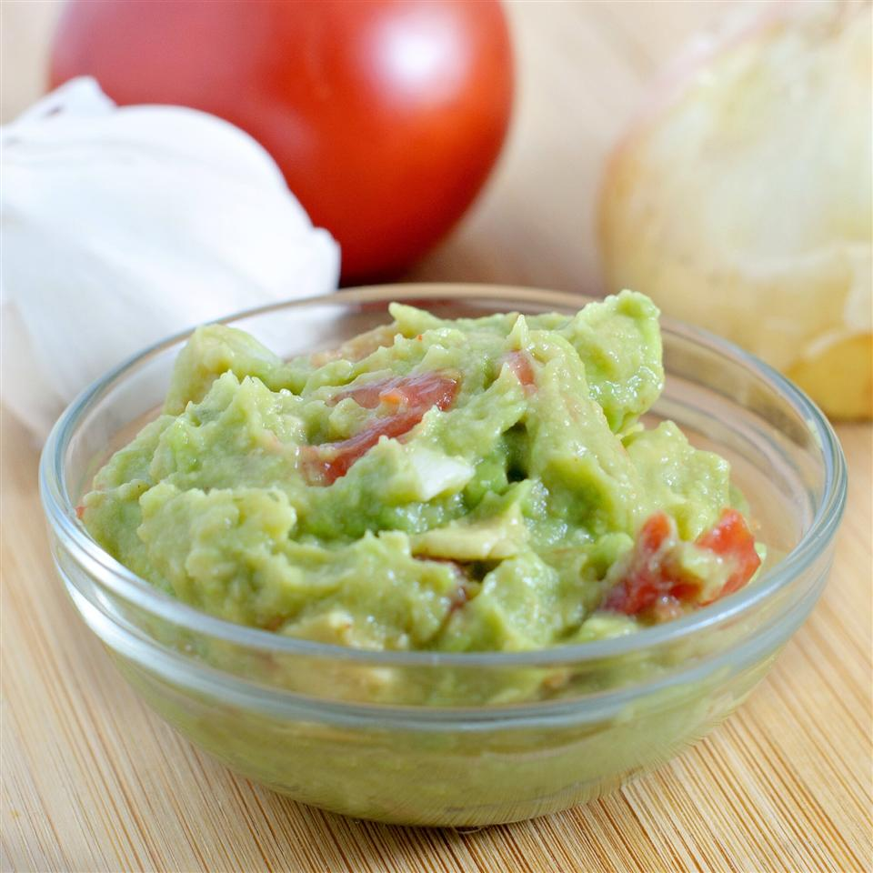

Guacamole

Making a Mexican Favourite
Simply a quick recipe for tasty guacamole!
Great with tortilla chips or as a
topping for Mexican foods!
Ingredients
- 2 avocados
- 1 small onion, finely chopped
- 1 clove garlic, minced
- 1 ripe tomato, chopped
- 1 lime, juiced
- salt and pepper to taste
Steps
-
Peel and mash avocados in a
medium serving bowl.
-
Stir in onion, garlic, tomato,
lime juice, salt and pepper.
-
Season with remaining lime juice
and salt and pepper to taste.
-
Chill for half an hour
to blend flavors.